Long text, tables, formulas, images, audio and video — formatted for Telegram without manually rebuilding your document.

Optional: send photos, audio or video first.
Paste text or upload a .md, .markdown or .txt file.
The bot builds a polished Telegram message and inserts media automatically.
# Athens
**Flight:** confirmed
|Day|Plan|
|---|---|
|1|Acropolis|
|2|Plaka|
$$
\int_{-\infty}^{\infty}
\frac{e^{-x^2/2}}{\sqrt{2\pi}}\,dx=1
$$Flight: confirmed
| Day | Plan |
|---|---|
| 1 | Acropolis |
| 2 | Plaka |
∫₋∞^∞ e−x²/2/√(2π) dx = 1